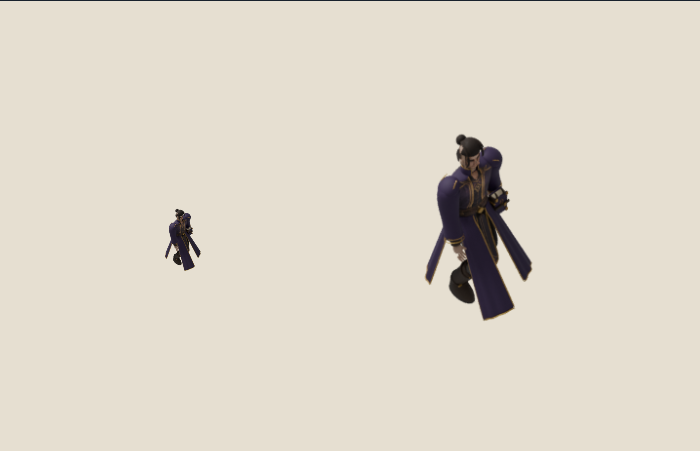

Scoped packaging pass. Painted gait remains unqualified. Godot shipping target; Pixi test harness.
48/48 GPU comparisons within tolerance; 102/102 structural checks. 48MiB → 8MiB base-level RGBA texel allocation. This is arithmetic, not measured GPU memory.
Use the toggle to compare identical frame12 at50px and150px. The unchanged long robe still obscures the supporting feet.

Findings and failure history · Neutral manifest · Pixel measurements · Structural checks